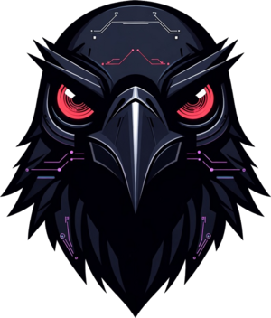

サーバが止まったら、
調べて、要点を
日本語で知らせる。
運用担当がいない小さな会社のための、サーバ監視の設置サービスです。異常に気づいたら、決まった調査を自動で流し、何が起きていそうかを添えてお知らせします。

CloseCrawいま
shop.example.jp が応答していません
3分以上、応答がありません。外から調べた結果：
- 名前解決は正常（203.0.113.10）
- 接続はできるが、3回とも20秒で時間切れ
- 証明書は有効（残り58日）
見立て：回線や DNS ではなく、サーバ側で Web サーバが応答を返せていない可能性があります。まず Web サーバのプロセスとエラーログを確認してください。
通知の例（架空のサイトです）
こんなことはありませんか
- サイトが落ちていたのに、お客様からの連絡で初めて気づいた
- 監視は入れたけれど、通知が来ても何が起きているのか読めない
- SSL 証明書の期限が切れて、サイトに警告が出てしまった
- サーバを見られる人が社内にいない
CloseCraw がすること
-
見張る
サーバの状態と、サイトの外からの見え方を、常に見張ります。
- サイトが3分応答しない
- 表示に5秒以上かかる状態が10分続く
- SSL 証明書の残りが14日を切った
-
調べる
異常を見つけると、決まった調査を自動で流します。ディスクの空き、プロセス、ログ、応答にかかった時間の内訳などです。
-
知らせる
調べた結果を、AI が要点だけ日本語にまとめて、Slack・メール・Telegram に届けます。
安心して任せられる理由
AI にコマンドを打たせません
どの調査を流すかは、あらかじめ決めた表で選びます。AI がするのは、結果を要約することだけです。
調査は読むだけです
許可した調査スクリプトしか動かず、サーバの設定は変えません。
AI が止まっても通知は止まりません
要約に失敗したときは、調査結果をそのまま添えて送ります。
中身を公開しています
ソースコードは GitHub で誰でも読めます（MIT ライセンス）。
お願いできること
- 監視の設置（サーバへの導入と、外からの監視の設定）
- 通知先の設定（Slack・メール・Telegram）
- 設置後の見守りと調整
つくった人
Handesen
自宅で Linux 機16台とネットワーク機器を24時間運用し、その現場のために CloseCraw を作りました。今もこの仕組みで、自分のサーバを毎日見張っています。
ご相談
〔問い合わせ先：未定〕